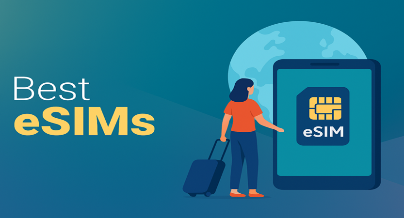

Best eSIMs for Global Travelers in 2025
James McGill | Updated on April 1st 2025Privacy and Technology Consultant In a hurry? Here’s the top eSIM for 2025:
- 🏆 Saily: Saily is the best all-around eSIM for global travelers thanks to its instant setup, wide global coverage, and user-friendly app. With flexible local, regional, and global plans, Saily keeps things simple—no SIM swapping or hidden fees. Plus, it works on all eSIM-compatible devices and offers 24/7 support. Ideal for tourists, business travelers, and digital nomads.
- Get the best eSIM of 2025 here.
- Read more about Saily here.
Staying connected while traveling used to mean juggling SIM cards, racking up roaming charges, or scrambling for public Wi-Fi. But in 2025, eSIMs will make travel easier than ever. With no physical card needed, you can activate a data plan instantly—anywhere in the world—right from your phone.
Whether you're a frequent flyer, a digital nomad, or heading abroad for the first time, these top eSIM providers offer affordable, reliable mobile data that travels with you.
But First, What Exactly Are eSIMs?
eSIMs—short for "embedded SIMs"—have been quietly transforming how people stay connected while traveling. Unlike traditional SIM cards, which require physical swapping, eSIMs are built directly into your device and can be activated digitally in minutes. With instant setup, no need to hunt for local SIM cards, and coverage in hundreds of countries, eSIMs can make your travel experience far more convenient, affordable, and stress-free.
That said, not all eSIM experiences are created equal. Some providers have patchy coverage, confusing apps, or lackluster support. It’s important to do your homework before you buy—because when you're abroad, the last thing you want is to be stuck without data. eSIMs are incredibly useful when paired with the right provider and a bit of prep, but they’re not something you want to pick at random.
If you're looking for the easiest way to stay online during your next trip, you’re in the right place. We’ve tested and reviewed the top eSIMs for global travel—so you can skip the SIM card drama and stay connected wherever you go. Let’s dive in!
An overview of the best eSIMs for 2025:
- 🥇 1. Saily — Saily offers flexible data plans in 150+ countries with a single eSIM you can use for all your trips—just top up and go. Setup is instant via app, with no roaming fees or hidden costs, plus 24/7 customer support.
- 🥈 2. Holiday.com — Holiday.com provides global coverage in 200+ countries with affordable, prepaid data-only plans and flexible top-up options. It works on all eSIM-ready devices and includes in-app support with real-time usage tracking.
- 🥉 3. Airalo — Airalo offers local and global plans in 200+ countries, with competitive pricing and reliable coverage. It features easy app-based setup, a loyalty rewards program, and optional call and text add-ons in select regions.
- Frequently Asked Questions about eSIMs (FAQ).
Why Should You Use an eSIM?
eSIMs are transforming how travelers access mobile data around the world. Here are some of the biggest reasons why eSIMs are becoming the go-to solution for global connectivity:
- Time Efficiency: No more wasting time looking for SIM card kiosks at the airport or waiting in line at local phone shops. With eSIMs, you can activate a data plan in minutes—often before you even land. It’s a seamless, instant setup that lets you hit the ground running.
- Cost-Effectiveness: International roaming charges can add up fast. eSIMs offer transparent, prepaid pricing that helps you avoid surprise fees. Many providers offer affordable local or regional plans, making it easy to stay connected on a budget—perfect for both long-term travelers and quick trips.
- Consistency and Scalability: If you travel frequently or across multiple countries, switching SIM cards every time gets old fast. eSIMs let you manage multiple destinations through one app and even reuse the same eSIM by topping it up. This gives you a consistent and scalable way to stay connected anywhere you go.
- Personalization and Flexibility: With a wide range of data plans—from 1 GB to unlimited—you can choose the option that best fits your trip. Many eSIM providers also offer plans tailored to specific regions, giving you more control over your connectivity and spending. Some even let you add call and text features if needed.
- Accessibility: eSIMs are incredibly easy to use. You don’t need to be tech-savvy—just scan a QR code or follow a few prompts in the app. Whether you’re a solo traveler, a digital nomad, or traveling with family, eSIMs simplify your setup and keep everyone connected.
- Data-Driven Control: Most eSIM apps let you monitor your data usage in real time, top up when needed, and even get alerts when you're running low. That means no more guessing how much data you have left—and no unexpected shut-offs while navigating a foreign city.
eSIMs take the hassle out of staying connected abroad. They’re fast, flexible, and designed for the way people travel today. Whether you're heading to one country or ten, an eSIM can help you save time, avoid stress, and focus on enjoying your trip.
Having explored the benefits of using eSIMs, let’s take a look at the top 3 providers we recommend for global travel in 2025!
1. Saily — Top Pick for Fast Activation
If you’re looking for a simple, affordable way to stay connected while traveling, Saily is a great option to consider. Launched in 2024 by the team behind NordVPN, Saily brings affordable international eSIM data plans to iPhone and Android users, with coverage in over 150 countries. The app is easy to use, with a minimalist design that guides you through selecting a plan and activating it in just a few taps. Whether you need data for a short trip or a longer adventure, Saily offers flexible plans ranging from 1GB to 20GB and 7 to 30 days.
What makes Saily especially appealing is its ease of use and focus on getting the basics right. Installation is smooth, and you can even set up your eSIM before you travel so it’s ready when you land. Although it doesn’t include standout security features, it benefits from the privacy-first reputation of Nord Security. Saily also partners with local telecom networks to ensure reliable performance in the countries it supports, offering fast browsing speeds—particularly in North America, Europe, and Asia. While the coverage isn’t as expansive as some competitors, the connection is dependable where available.
In short, Saily is a reliable, no-fuss eSIM solution for travelers who want affordable data and a user-friendly app experience. While it may lack some of the bells and whistles of older providers, it excels where it counts—with solid coverage, simple pricing, and helpful 24/7 support. If you value convenience, security, and budget-friendly plans, Saily is definitely worth a try on your next trip.
Get Saily - Stay connected wherever you go!
2. Holiday.com — Great for First-Time Users
If you travel often and value both privacy and convenience, Holiday.com’s eSIM service is designed with you in mind. Backed by the team behind ExpressVPN, this eSIM makes it easy to stay connected across borders while keeping your personal data secure. With coverage in over 100 countries, you can purchase and activate a data plan straight from the app before you even leave home. The setup process is quick and intuitive, making it ideal whether you’re a seasoned traveler or a first-time eSIM user.
What sets Holiday.com apart is its deep commitment to privacy. The service doesn’t require any personal data to get started—no ID, no email, no fuss. You can pay with cryptocurrency for an added layer of anonymity, and all network traffic is routed through secure, zero-logging infrastructure. The app itself has a clean, streamlined design that walks you through selecting a plan, scanning your QR code, and getting online in minutes. Plus, data speeds are solid in most major destinations, and you can easily top up or extend plans as needed.
Overall, Holiday.com is a top choice if you're looking for a privacy-first eSIM that doesn’t sacrifice usability. It may not offer as many countries as some competitors, but what it lacks in breadth it makes up for in ease, transparency, and user control. Whether you're a digital nomad or just need reliable data while on vacation, Holiday.com makes staying secure and connected abroad refreshingly simple.
Get Holiday.com - Stay connected wherever you go!
3. Airalo — Great for Frequent Travelers
If you want a stress-free way to stay online while traveling, Airalo is one of the best eSIM options out there. With coverage in over 200 countries and regions, it offers an unmatched global reach—whether you're hopping between cities in Europe or exploring remote corners of Asia. The Airalo app makes it easy to browse and purchase local, regional, or global data plans, all from your phone. You can install your eSIM in minutes, without needing to swap out physical SIM cards or deal with local providers.
What you'll love about Airalo is how budget-friendly and flexible it is. Plans range from just 1GB to larger bundles, often for less than what you'd pay roaming with your regular carrier. The app is simple to navigate and even lets you monitor your usage and top up as needed. It’s perfect for both frequent flyers and occasional travelers. While data speeds may vary depending on the country and network, most users report fast, reliable connections, especially in major travel hubs.
Airalo takes the hassle out of staying connected abroad. With affordable prices, broad international coverage, and an intuitive app experience, it’s a top pick for anyone who wants instant mobile data without the roaming fees. Whether you’re traveling for work or leisure, Airalo makes it easy to stay online wherever your journey takes you.
Get Airalo - Stay connected wherever you go!
How Did We Choose the Best eSIMs?
With dozens of eSIM providers out there, we carefully narrowed down our list by focusing on what matters most to real-world travelers. Whether you're a frequent flyer, remote worker, or vacationer looking for hassle-free mobile data abroad, these are the criteria we used to identify the best eSIM options in 2025:
- Coverage: The best eSIM is only useful if it works where you’re going. We prioritized providers with wide-reaching coverage—ideally 150+ countries—including not just major cities but also remote regions. Global travelers need reliable service whether they’re in Paris or Patagonia.
- Ease of Use: Setting up an eSIM should be quick and painless. We looked for apps with intuitive interfaces, simple activation (often with a QR code), and step-by-step guidance. Bonus points went to providers that offered multi-language support and minimal tech knowledge required.
- Pricing: Affordability matters, but so does transparency. We evaluated eSIMs based on price per GB, prepaid vs. subscription options, and clarity around fees. We also checked for flexible plans—like pay-as-you-go, unlimited data, and country-specific bundles—so travelers can find the best fit for their trip and budget.
- Features: Beyond data, many eSIMs offer valuable extras. We gave preference to providers with hotspot/tethering support, call and SMS options, multi-device compatibility, and the ability to manage multiple trips under one profile. Some even let you store multiple eSIMs and switch between them.
- Customer Support: Travel rarely goes 100% smoothly, so responsive and reliable customer service is crucial. We tested providers for 24/7 availability, live chat support, clear refund policies, and helpful online FAQs to ensure users aren't left stranded without connectivity.
- Reputation: Finally, we factored in real user reviews, community feedback, and our own testing experiences. Providers with consistent reliability, trustworthy refund practices, and strong user satisfaction scores ranked highest.
Best eSIMs - Frequently Asked Questions
📱 What is an eSIM?
An eSIM, or embedded SIM, is a digital SIM card embedded directly into a device, eliminating the need for a physical SIM card. It allows users to activate a cellular plan from a carrier without using a physical SIM.
📲 How does eSIM differ from a physical SIM card?
Unlike traditional physical SIM cards that require insertion and removal, an eSIM is built into the device and can be programmed remotely. This enables users to switch carriers or plans digitally without needing a new physical card.
👉 Which devices support eSIM technology?
Many modern smartphones, tablets, and wearables support eSIM technology. Notable examples include recent models of iPhones, Google Pixel devices, Samsung Galaxy phones, and various smartwatches. It's advisable to check the specifications of your specific device to confirm eSIM compatibility.
🤳 How do I activate an eSIM on my device?
Activating an eSIM is usually a quick process, though it can vary slightly depending on your carrier and device. First, you’ll need to obtain an eSIM activation plan from your mobile provider. Once you have it, you’ll either scan a QR code provided by the carrier or manually enter the activation details. From there, simply follow the on-screen instructions on your device to complete the setup. If you run into any issues or need more specific guidance, it's a good idea to check your device’s user manual or reach out to your carrier’s support team.
📱 Can I use multiple eSIMs on a single device?
Yes, many eSIM-compatible devices allow users to store multiple eSIM profiles, enabling easy switching between different carriers or plans. However, the number of profiles and the ability to use them simultaneously depend on the device's hardware and software capabilities.
👥 Is it possible to transfer an eSIM to another device?
Transferring an eSIM to another device typically requires deactivating it on the current device and reactivating it on the new one. This process varies by carrier and device, so it's recommended to consult your carrier's guidelines for transferring eSIM profiles.
🕵 Are eSIMs secure?
eSIMs offer a high level of security, comparable to traditional SIM cards. They are built with robust encryption standards to protect user information and prevent unauthorized access.
🛫 Can I use an eSIM for international travel?
Yes, eSIMs are particularly beneficial for international travelers. Many carriers and third-party providers offer eSIM plans tailored for use in multiple countries, allowing users to switch to a local network without needing a physical SIM card.
🗣 Do eSIMs support both data and voice services?
eSIMs can support both data and voice services, similar to physical SIM cards. However, the availability of these services depends on the carrier and the specific plan you choose. Some eSIM plans may be data-only, so it's important to verify the details before activation.
Transparency and Trust: The aim of this website is to help you find the perfect software for your needs in an easy-to-view comparison list. You can read more about how we review and about our background in the About Us section of this website. Software.fish does not feature all of the software available in the market, we cherry-pick what we consider to be the leaders in each vertical. We try to keep this site updated and fresh, but cannot guarantee the accuracy of the information as well as the prices featured at all times. All prices quoted on this site are based on USD so there could be slight discrepancies due to currency fluctuations. Although the site is free to use, we do earn commissions from the software companies that we have partnered with. If you click on one of our links and then make a purchase, we will get paid by that company. This has an impact on the ranking, score, and order in which the software is presented in our list and elsewhere throughout the site. Software listings on this page DO NOT imply endorsement.